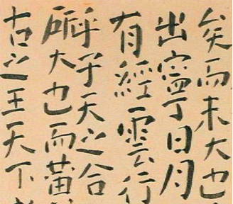

II - A Virtual Confucian House
Work Area
Education has always been an important topic in Confucianism. Ever since Mencius’ time, it was believed that to form a good state is to focus on the welfare of its people, and to achieve that, there must be order, security, wealth, happiness, and education. Furthermore, Zhu Xi’s Confucianism teachings were used in the imperial civil service examinations, which tested people's understanding of Confucian texts. The furniture that is placed in this study room was built to remind us of the importance of being a ‘gentleman’ and upright in a Confucian society.
Desk Space
These three furnitures shown above are all built upright and straight, none are curved or unbalanced in any way. The purpose of this structural design is to promote the idea of a proper gentleman. Each one is symmetrical and stable, and the design remains simple. It can be seen as Confucian influenced designs due to the simplistic style that many objects from Confucian societies had.
Calligraphy
Although not a furniture piece, calligraphy is frequently practiced in work rooms and it is an activity that is often seen in Confucian societies. Not only should furniture be upright and symmetrical, calligraphy with upright lettering is also an important practice. It was said that “a written character should stand balanced on all four sides . . . Leaning or standing upright like a proper gentleman, the upper half of the character sits comfortably, while the bottom half supports it.”4
2 Cai. "Pingdan: The Aesthetics of Simplicity and Subtlety — Late-Ming Scholar's Self Cultivation in Art and Design." 218.
3 Fu Shan (1607-1684), Qiang Lu Miao Han (He Chuangshi Foundation on the Art of Calligraphy, Taipei)
4 Delbanco, Dawn. "Chinese Calligraphy." In Heilbrunn Timeline of Art History. New York, The Metropolitan Musuem of Art. 2008.